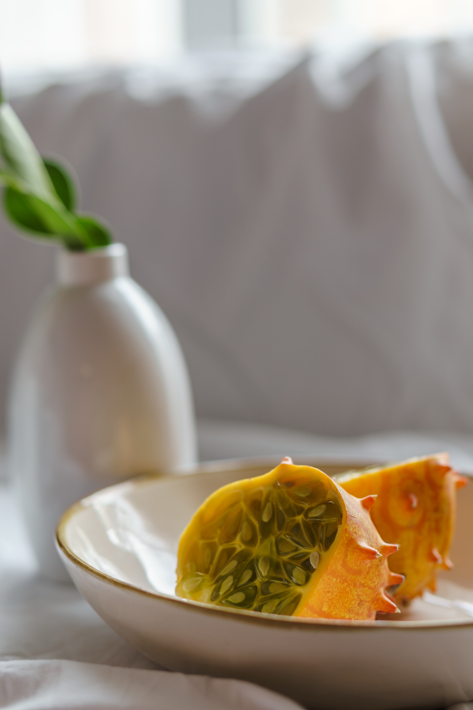
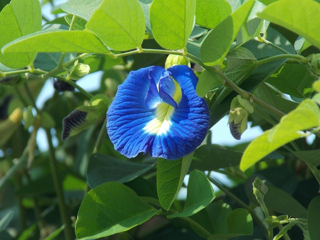

After much debate, planning, and taste testing... the plan going forward is to limit variety. Focusing mostly on what we truely enjoyed.
Which means...
TINY THINGS!
We loved just about everything we planted last year that was tiny in size and stature. Because all of it was BIG ON TASTE
 | Name | Description | Personal Thoughts for coming year |
|---|---|---|
| Quinoa | Grain, that doubles as an ornamental. Offers a wide range of colors. | Excited to see if it will produce enough to be edible, wil lbe sown into flower beds. |
| Butterfly Pea | Huge blue blooms. Used as a dye or base for teas. | Excited to see if it will produce enough to be edible, wil lbe sown into flower beds. |
| Jelly Melon | Fruit grows on vines. Turns deep orange when ripe, and has small spiny "horns" on it. Pump inside looks like Lime Jello | Something weird to try and give away to folks to also try. |
And more to come....